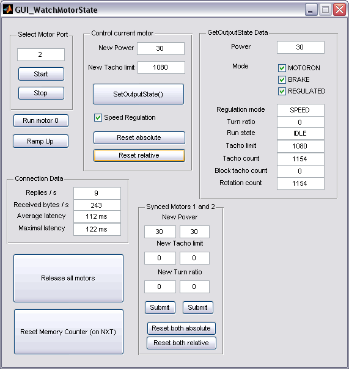

Watch Motor State GUI
"Watch Motor State GUI" is a tool to analyze the current motor settings and its behavior.

Select motor port
At first one motor port (0,1,2) has to be selected in the group field "Select motor port" and the information polling should be startet with the "Start" button.
Control current motor
In the second group field a specific power and angle can be set and send to the motor by pressing the "SetOutputState()" button.
GetOutputState Data
The group field "GetOutputState Data" monitors the current settings of the selected motor. All data are read only. They display the result of NXT_GetOutputState(). Monitoring is only enabled after pressing the "Start" button, and only for the current motor. Before changing the motor port, press "Stop" first.
Connection Data
Information about the communication channel is given in group field "Connection Data".
Synced Motors 1 and 2
The group field "Synced Motors 1 and 2" is given to experiment with the synchronization options. Whenever a "Submit" button is pressed, the specified NXT_SetOutputState() packet will only be sent to the according motor (1 or 2).
To stop all motors one should press the "Release all motors" button. "Reset Memory Counter" starts an empty program on the NXT brick, which resets all counters, especially the otherwise unchangable TachoCount.
The other buttons are for testing purposes only.